User guide and test checklist
A free website that lets people talk across speech, text, braille and sign language. This guide shows every page, step by step, and how to check that each one works.
Open the website
{{BASE}}Each chapter starts with a link that opens that exact page. Click it in the PDF, or scan this code with a phone camera to open the site.
Mini project, Semester VI, Computer Engineering, Vidyavardhini's College of Engineering & Technology (University of Mumbai), 2025–26.
Riddhi Mehta, Vedika Misal, Siddhi Bhosale, Om Panjari. Mentor: Prof. Manali Payghan.
Open the exact link for that page. Steps tell you what to press, in order. Check it works gives an input and the result you should see. If something goes wrong tells you what to try.
Button names in this guide are written in bold, exactly as they appear on the screen.
Sign to text, Gesture and emotion, sign practice and fingerspelling in Bridge use the camera. Speech to text and speaking in Bridge use the microphone. When the browser asks, press Allow.
Laptop (Chrome or Edge): click the icon to the left of the web address, switch Camera or Microphone to Allow, then reload the page.
Android: tap the icon to the left of the address, then Permissions, and allow the camera or microphone.
iPhone: Settings, then Safari, then Camera or Microphone, then Allow.
Camera pictures never leave your device; the models run inside the browser. Bridgify has no accounts and keeps nothing about you on a server. Speech to text in Chrome, Edge or Safari uses the browser's own speech service unless you turn on on-device recognition. The privacy page explains this in full.
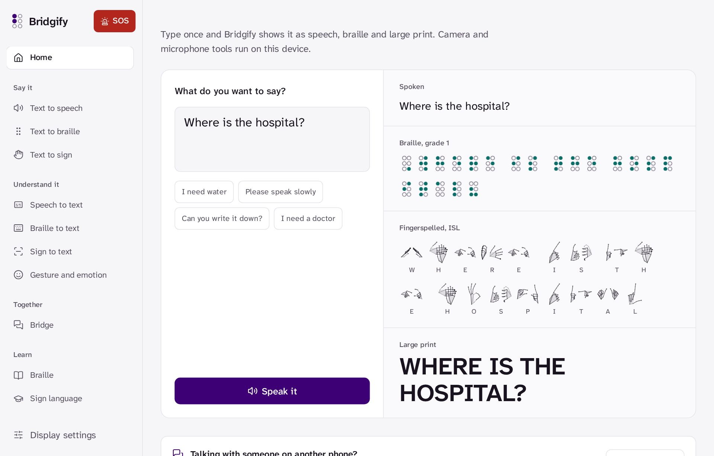
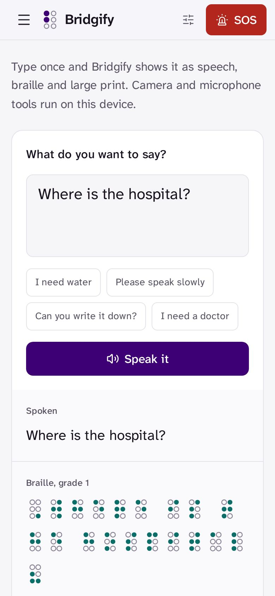
On a phone the layout changes to one column with large buttons, so everything can be reached with a thumb.
Type one message and see it at once as speech, braille, fingerspelling and large print. This is the quickest way to show someone what you mean.
Type Hello world. The braille row shows ⠠⠓⠑⠇⠇⠕⠀⠺⠕⠗⠇⠙. The first cell (⠠) means "the next letter is a capital". Press Speak it and you hear "Hello world".
No sound: turn up the volume and check the phone is not on silent. Then try the Text to speech page and choose another voice.
For someone who cannot speak: type, or tap a ready-made phrase, and the phone says it aloud. Each word lights up as it is spoken.
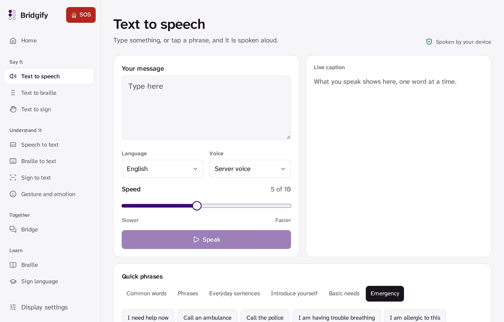
No voice, or a robotic voice: open Voice and pick another one. Server voice always works when you are online, even on devices with no voices installed.
For someone who is Deaf or hard of hearing: live captions of what the other person says, with punctuation added.
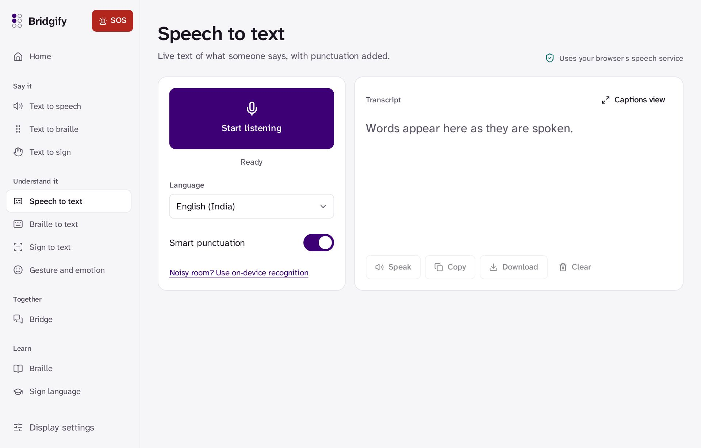
Say "where is the nearest hospital". You see Where is the nearest hospital?, with the capital letter and question mark added for you.
Nothing appears: check the microphone permission (chapter 1) and that no other app is using the microphone. In Brave or Firefox, use on-device recognition.
Turns text into braille in three standards. It uses liblouis, the same braille translator that screen readers use.
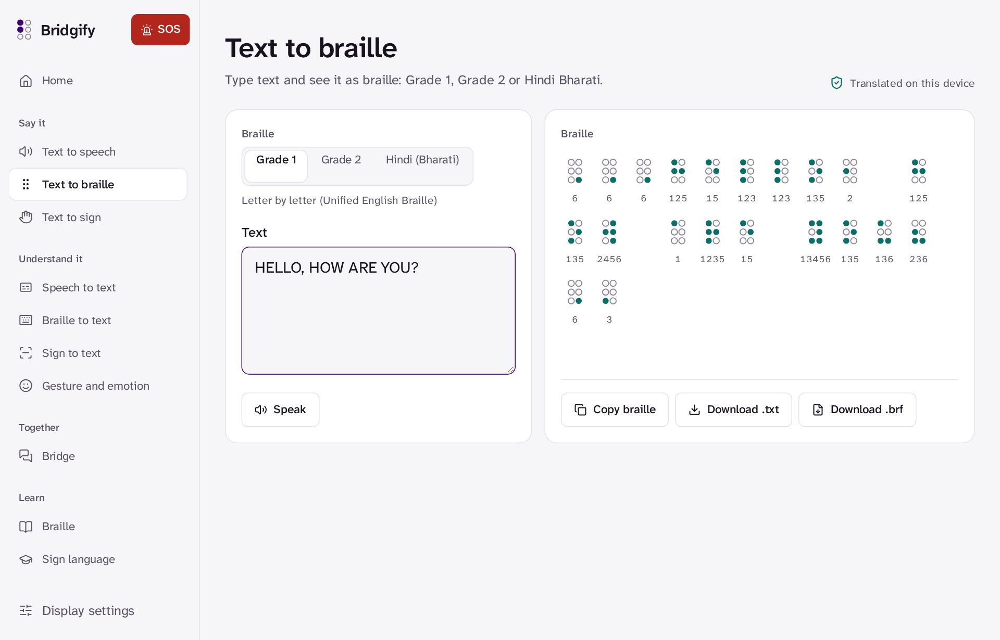
| Choose | Type | You should see |
|---|---|---|
| Grade 1 | Hello world | ⠠⠓⠑⠇⠇⠕⠀⠺⠕⠗⠇⠙ |
| Grade 1 | HELLO, HOW ARE YOU? | ⠠⠠⠠⠓⠑⠇⠇⠕⠂⠀⠓⠕⠺⠀⠁⠗⠑⠀⠽⠕⠥⠦⠠⠄ |
| Grade 2 | the and for of with | ⠮⠀⠯⠀⠿⠀⠷⠀⠾ (one cell per word) |
| Grade 2 | THE RED FORT | ⠠⠠⠠⠮⠀⠗⠫⠀⠿⠞⠠⠄ |
| Hindi (Bharati) | नमस्ते | ⠝⠍⠈⠎⠞⠑ |
These are the same cells that native liblouis produces. The site is checked against 59 such cases.
Write braille and read it as text. On a laptop you type like on a Perkins brailler. On a phone you tap the dots.
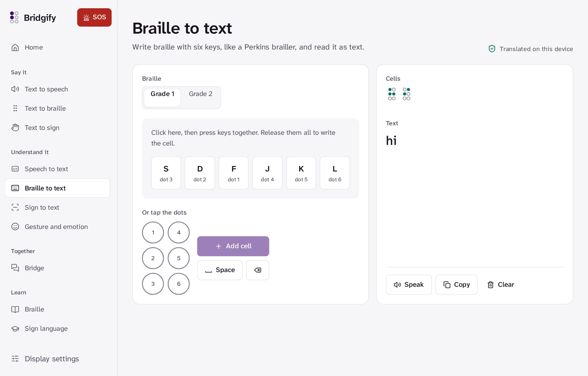
The Result box shows the text. Press Speak to hear it, Copy to copy it or Clear to start again.
Fingerspell to the camera and the letters become text. Recognition runs on your device; the camera picture is never uploaded. It reads ISL and ASL fingerspelling.
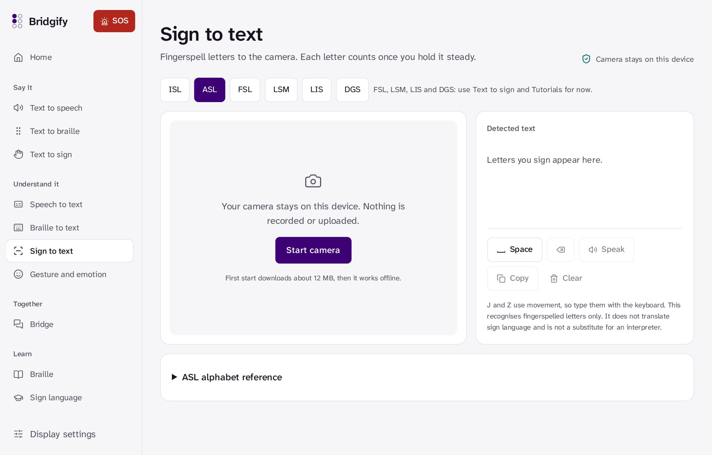
Type words and an animated signer shows each sign. It covers six sign languages: ISL (Indian), ASL (American), FSL (French), LSM (Mexican), LIS (Italian) and DGS (German). Words it doesn't know are fingerspelled letter by letter.
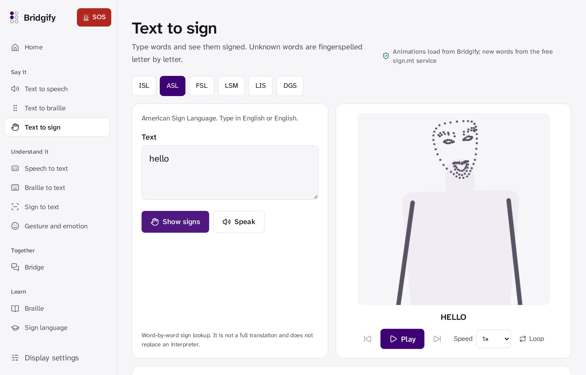
A word shows as letter cards: Bridgify has stored signs for everyday words and phrases in each language, and spells any other word letter by letter. The page names the words it spelled. "Signs couldn't load": check the internet connection the first time, then press Show signs again (stored signs work offline after that).
This looks up signs word by word. It is not a sign-language interpreter.
Show a hand gesture or a facial expression and see what it means. It can say the meaning aloud, which helps someone who cannot speak.
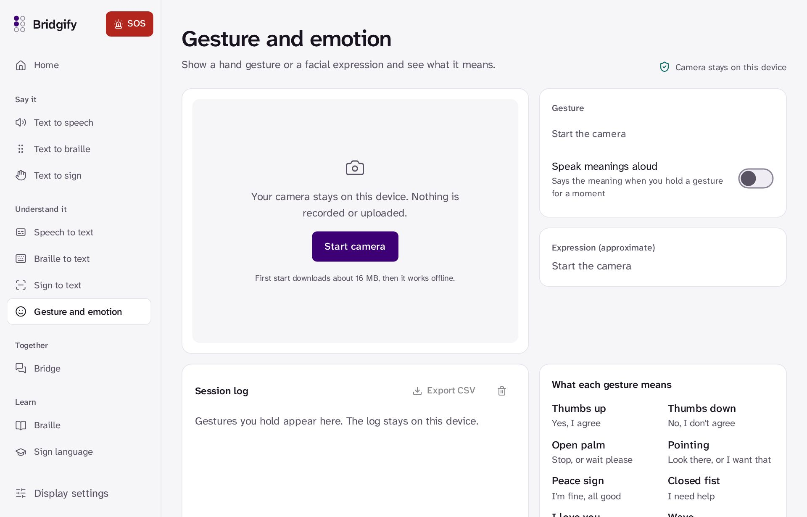
| Gesture | Meaning shown | Spoken |
|---|---|---|
| Thumbs up | Yes, I agree | "Yes, I agree." |
| Thumbs down | No, I don't agree | "No, I don't agree." |
| Open palm | Stop, or wait please | "Please wait." |
| Pointing | Look there, or I want that | "I want that one." |
| Peace sign | I'm fine, all good | "I'm fine, all good." |
| Closed fist | I need help | "I need help." |
| I love you | I love you (ASL sign) | "I love you." |
| Wave (open hand moving side to side) | Hello, or goodbye | "Hello!" |
Hold a thumbs up. Thumbs up and Yes, I agree appear and a line is added to the log. Smile widely and the expression changes to Happy.
Two people, two phones, one conversation. Each person chooses how they send messages and how they want to receive them. For example, a Deaf person types and reads captions, while a hearing person speaks and listens. Messages go directly from phone to phone, and nothing is stored.
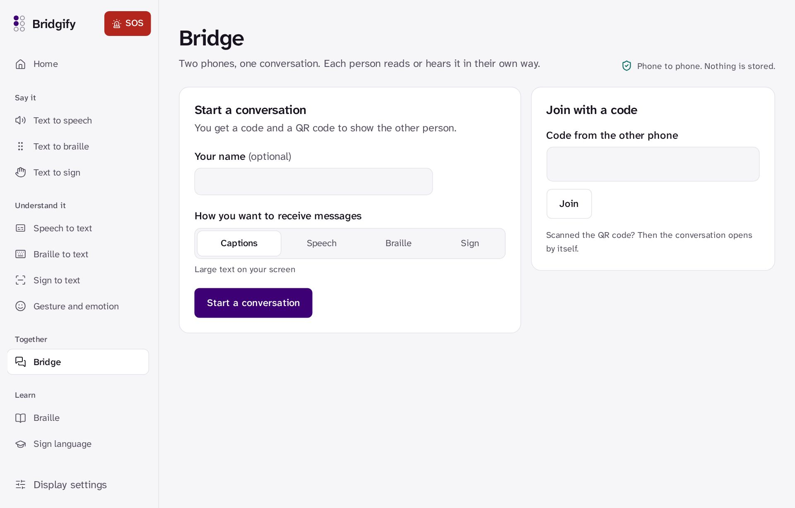
Only one laptop? On the waiting screen, press Open it in another tab on this device and talk between the two tabs. The tabs talk to each other directly, so the messages don't need the internet.
Emergency cards that anyone can understand, in large text with braille, and signs on request. Bridgify can speak a card aloud, call your emergency contact and share your location. SOS works without internet once the site has been opened.
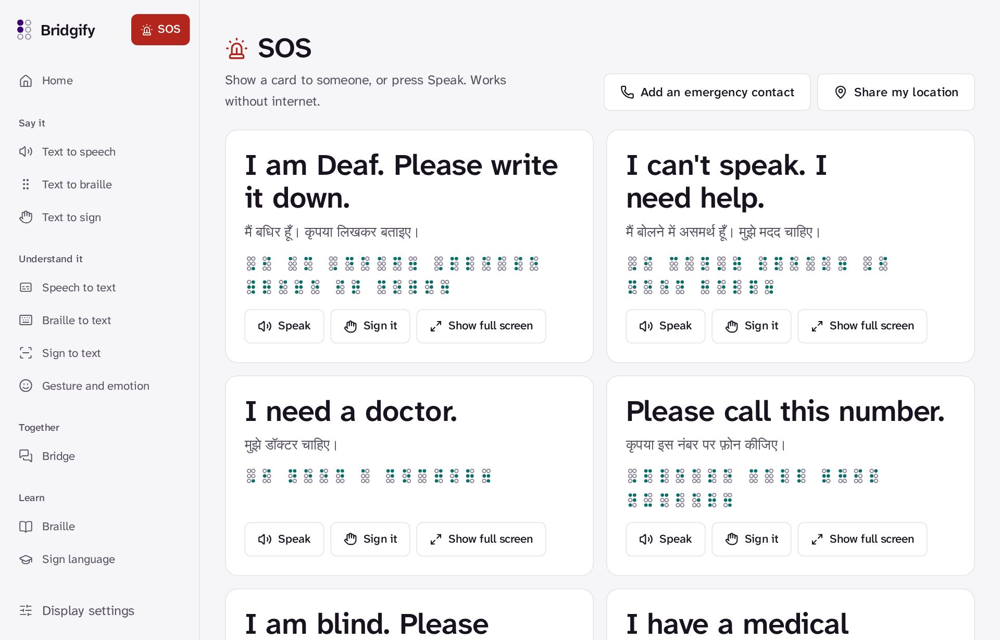
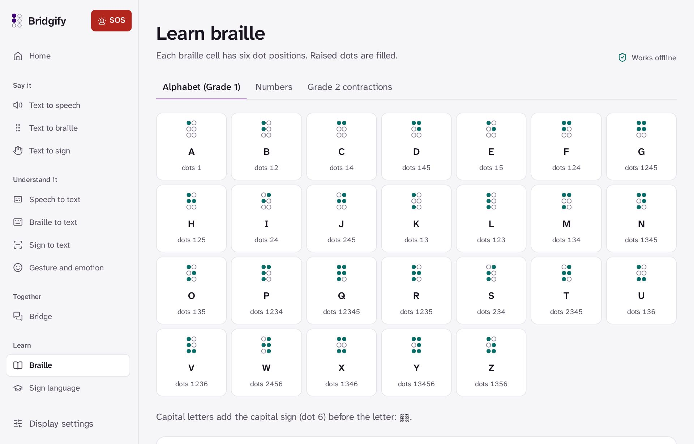
On the braille alphabet page, answer the quiz. Then open ASL, Practice with camera, start the camera and make the letter it asks for.
Open Display settings from the bottom of the left menu, or with the sliders icon at the top right on a phone. Everything you choose is saved on your device.
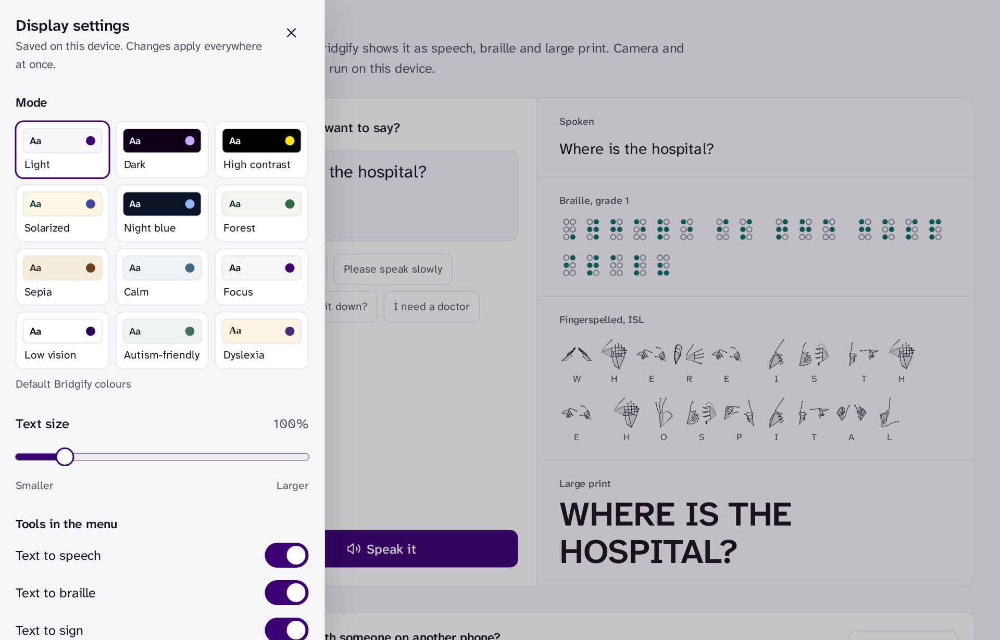
| Mode | For | Mode | For |
|---|---|---|---|
| Light | Default colours | Calm | Muted colours, no motion |
| Dark | Less glare | Focus | Only the tool you are using |
| High contrast | Black, white and yellow | Low vision | Larger, bolder text |
| Solarized | Soft, low strain | Autism-friendly | Pastel, predictable, no motion |
| Night blue | Dim, for night use | Dyslexia | OpenDyslexic font, wide spacing |
| Forest | Green, calm | Sepia | Warm paper |
Also in this panel: Text size; Tools in the menu, to hide tools you don't use; and under More, Underline all links, Large cursor and Turn off animation.
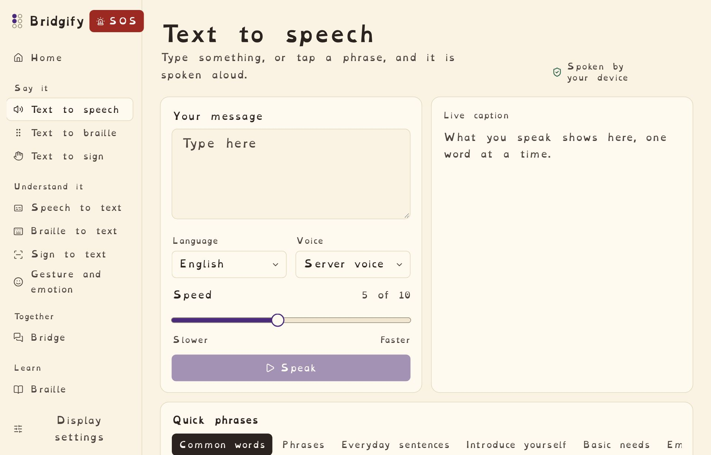
| Page | Link | What it shows |
|---|---|---|
| About | {{BASE}}/about | What Bridgify is, who made it and how it works |
| Privacy | {{BASE}}/about/privacy | What stays on your device and what doesn't |
| Evidence | {{BASE}}/about/evidence | Accuracy of every model, measured on people it never saw, with confusion charts |
| Credits | {{BASE}}/about/credits | Every dataset, model, font and sign source, with its licence |
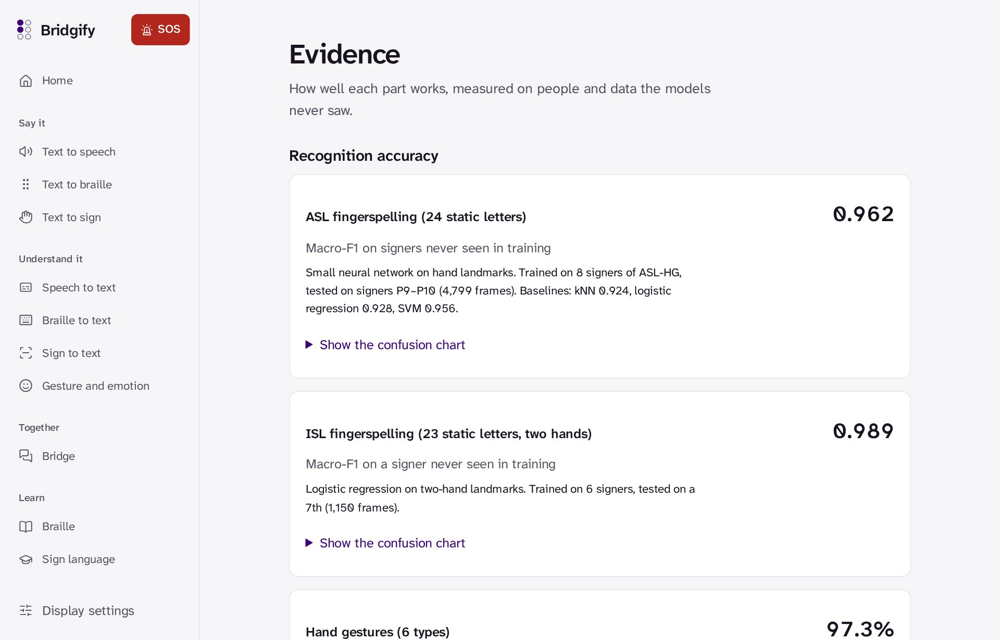
0.962
ASL fingerspelling, macro-F1 on two signers never seen in training
0.989
ISL fingerspelling, macro-F1 on a signer never seen in training
97.3%
Hand gestures, on 626 people not used for tuning
59 / 59
Braille cases identical to native liblouis
Macro-F1 averages the score of every letter equally, so a rare letter counts as much as a common one. 1.0 would be perfect.
Tick each row as you go. Use Chrome on a laptop unless the row says phone.
| # | Page | Do this | You should see | ✓ |
|---|---|---|---|---|
| 1 | Home | Open the site | The page loads in a second or two; the menu lists every tool | ☐ |
| 2 | Home | Type Hello world | Braille ⠠⠓⠑⠇⠇⠕⠀⠺⠕⠗⠇⠙, fingerspelling pictures and large print | ☐ |
| 3 | Home | Press Speak it | "Hello world" is spoken | ☐ |
| 4 | Home | Tap the suggestion I need water | The box fills with "I need water" | ☐ |
| 5 | Text to speech | Emergency, tap Call an ambulance | Spoken at once, words light up | ☐ |
| 6 | Text to speech | Type a long paragraph, press Speak, then Pause and Resume | It pauses and carries on to the end | ☐ |
| 7 | Text to speech | Move Speed to fast, press Repeat | Same text, faster | ☐ |
| 8 | Text to speech | Language Hindi, tap a Hindi phrase | Spoken in Hindi | ☐ |
| 9 | Speech to text | Start listening, say "where is the nearest hospital" | Where is the nearest hospital? | ☐ |
| 10 | Speech to text | Press Captions view | Very large captions | ☐ |
| 11 | Speech to text | Press Download | A .txt file with the transcript | ☐ |
| 12 | Speech to text | In Firefox or Brave: Download and turn on, then speak | A progress bar, then captions without the browser's service | ☐ |
| 13 | Text to braille | Grade 1, type HELLO, HOW ARE YOU? | ⠠⠠⠠⠓⠑⠇⠇⠕⠂⠀⠓⠕⠺⠀⠁⠗⠑⠀⠽⠕⠥⠦⠠⠄ | ☐ |
| 14 | Text to braille | Grade 2, type the and for of with | ⠮⠀⠯⠀⠿⠀⠷⠀⠾ | ☐ |
| 15 | Text to braille | Hindi (Bharati), type नमस्ते | ⠝⠍⠈⠎⠞⠑ | ☐ |
| 16 | Text to braille | Download .brf | A .brf file downloads | ☐ |
| 17 | Braille to text | In the Brailler box press F | a | ☐ |
| 18 | Braille to text | FDK together, then DJ together | hi | ☐ |
| 19 | Braille to text | Phone: tap dots 1 and 2, Add cell | b | ☐ |
| 20 | Sign to text | ASL, Start camera | Download progress once, then your camera with hand points drawn on it | ☐ |
| 21 | Sign to text | Hold ASL L, then V | L then V added after the ring fills | ☐ |
| 22 | Sign to text | Spell L O V E, press Speak | LOVE is shown and spoken | ☐ |
| 23 | Sign to text | Switch to ISL and sign with two hands | ISL letters are added | ☐ |
| 24 | Text to sign | ASL, hello, Show signs | A figure signs HELLO | ☐ |
| 25 | Text to sign | Type Riddhi, Show signs | Fingerspelled R-I-D-D-H-I | ☐ |
| 26 | Text to sign | ISL, Where is the hospital? | Order line HOSPITAL WHERE | ☐ |
| 27 | Text to sign | Try FSL, LSM, LIS and DGS with their example words | Each one plays a sign or fingerspells | ☐ |
| 28 | Gesture and emotion | Start camera, thumbs up | Thumbs up, Yes, I agree, a line in the log | ☐ |
| 29 | Gesture and emotion | Turn on Speak meanings aloud, open palm | You hear "Please wait." | ☐ |
| 30 | Gesture and emotion | Smile widely | Expression Happy | ☐ |
| 31 | Gesture and emotion | Export CSV | A .csv file with the log | ☐ |
| 32 | Bridge | Phone A: Start a conversation | A six-character code and a QR code | ☐ |
| 33 | Bridge | Phone B: scan the QR code | Both phones show the conversation | ☐ |
| 34 | Bridge | Type on A, Send | B shows or speaks it in its chosen form | ☐ |
| 35 | Bridge | B chooses to receive Braille | A's next message arrives as braille cells | ☐ |
| 36 | SOS | Press the red SOS button, then Show full screen on a card | The card fills the screen in large text and plays its signs | ☐ |
| 37 | SOS | Aeroplane mode, reload | The cards still appear | ☐ |
| 38 | Learn braille | Answer the quiz | Correct. for the right letter | ☐ |
| 39 | Learn braille | Open Numbers | The number sign explained | ☐ |
| 40 | Learn sign | ASL Practice with camera, make the letter shown | Well done, then Next letter | ☐ |
| 41 | Learn sign | Switch between ISL, ASL, FSL and DGS | Each shows its own alphabet; LSM and LIS explain why they have no pictures | ☐ |
| 42 | Display settings | Choose Dyslexia | OpenDyslexic font everywhere | ☐ |
| 43 | Display settings | Choose High contrast, reload | Black and yellow, still set after reload | ☐ |
| 44 | Display settings | Phone, largest text size | No sideways scrolling | ☐ |
| 45 | Any page | Use only Tab and Enter | A visible outline shows where you are; every button works | ☐ |
| 46 | Evidence | Open the page | 0.962, 0.989, 97.3% and 0.744 with charts | ☐ |
| 47 | Any wrong link | Open a link that doesn't exist | That page doesn't exist, with links to every tool | ☐ |
| 48 | Phone | Install the site (chapter 1) | A Bridgify icon on the home screen that opens full screen | ☐ |
| Time | Show | Say |
|---|---|---|
| 0:00 | Home page. Type "Where is the hospital?" and press Speak it | "One message, shown every way at once: speech, braille, fingerspelling and large print." |
| 0:45 | Sign to text, ASL. Spell L-O-V-E, press Speak | "The camera never leaves the laptop. A small model reads 21 points on the hand. On signers it never saw, it scores 0.96." |
| 2:00 | Text to sign, ISL, "Where is the hospital?" | "ISL puts question words last, so we reorder the words first. Unknown words are fingerspelled." |
| 3:00 | Text to braille, Grade 2. Type a sentence, Download .brf | "This is liblouis, the standard braille translator, running in the browser. It matches the native library on all 59 test cases." |
| 4:00 | Bridge on two phones. One types, the other hears it. Then switch to Braille | "Each person picks their own way to send and receive. It goes phone to phone, and nothing is stored." |
| 5:30 | Display settings: Dyslexia, then High contrast | "Twelve modes, each checked automatically for contrast and accessibility." |
| 6:15 | Press SOS, then Show full screen on a card | "One tap in an emergency, and it works offline." |
| 6:45 | Evidence page | "Every number is measured on people the models never saw." |
It converts between speech, text, braille and sign language in the browser, so people with different abilities can talk to each other.
MediaPipe finds 21 points on each hand in every camera frame. We turn them into 91 numbers per hand: positions, finger angles, fingertip distances and palm direction. A small neural network (ASL) or logistic regression (ISL) picks the letter. A letter is accepted only when it is held for 0.7 seconds with at least 80% confidence.
We trained on public datasets and tested on people left out of training: ASL macro-F1 0.962 on two unseen signers, and ISL 0.989 on an unseen signer. Testing on new people matters, because a model can score highly on people it has already seen and still fail on new ones.
Privacy, because the camera picture never leaves the device. It also costs nothing to host, and it keeps working offline. The models are small: 12 MB for Sign to text, downloaded once.
No. Sign to text reads fingerspelled letters, and Text to sign looks signs up word by word. Translating whole signed sentences is still an open research problem, and the site says so.
liblouis, the open-source braille translator used by screen readers such as NVDA and Orca. We compiled it to WebAssembly so it runs in the browser.
With WebRTC, a direct phone-to-phone connection. A free PeerJS server only introduces the two phones; messages then go directly between them. Only text and hand points are sent, never video or audio.
Letters that need movement are not recognised from the camera: J and Z in ASL, and H, J and Y in ISL. Expression detection is approximate (macro-F1 0.744). Sign output covers common words; other words are fingerspelled.
Automated axe checks on every page in all 12 modes, colour-contrast checks for every mode, full keyboard use, and 200% text on a small phone screen.
Nothing. It uses Vercel's free hosting, open-licence models and datasets, sign animations prepared once with the open sign.mt project, and the free PeerJS service.
| Page | Link |
|---|---|
| Home | {{BASE}}/ |
| Text to speech | {{BASE}}/tools/text-to-speech |
| Speech to text | {{BASE}}/tools/speech-to-text |
| Text to braille | {{BASE}}/tools/text-to-braille |
| Braille to text | {{BASE}}/tools/braille-to-text |
| Sign to text | {{BASE}}/tools/sign-to-text |
| Text to sign | {{BASE}}/tools/text-to-sign |
| Gesture and emotion | {{BASE}}/tools/gesture-emotion |
| Bridge | {{BASE}}/bridge |
| SOS | {{BASE}}/sos |
| Learn braille: alphabet | {{BASE}}/learn/braille/alphabet |
| Learn braille: numbers | {{BASE}}/learn/braille/numbers |
| Learn braille: Grade 2 | {{BASE}}/learn/braille/contractions |
| Learn ISL | {{BASE}}/learn/sign/isl/alphabet |
| Learn ASL | {{BASE}}/learn/sign/asl/alphabet |
| Practise ASL with the camera | {{BASE}}/learn/sign/asl/practice |
| Practise ISL with the camera | {{BASE}}/learn/sign/isl/practice |
| About | {{BASE}}/about |
| Privacy | {{BASE}}/about/privacy |
| Evidence | {{BASE}}/about/evidence |
| Credits | {{BASE}}/about/credits |
| Code | https://github.com/RidzM/bridgify |